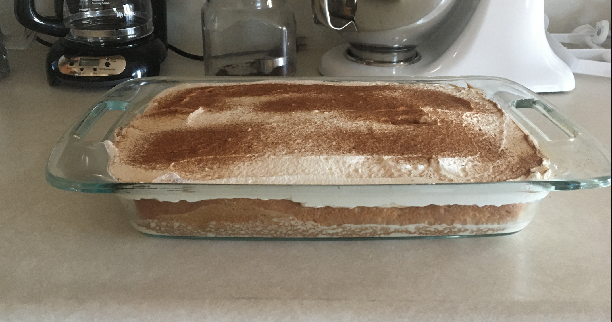
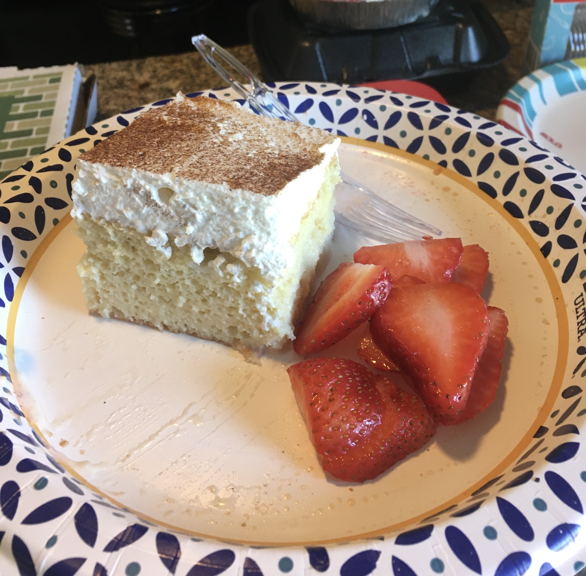

Tres Leches Cake

Description
Generally speaking, cakes don't really do it for me. But Tres Leches is one exception. A light and airy sponge soaked in a mixture of three milks (hence the name) and topped with simple whipped cream, this delightful Mexican treat is one of my favorites. I bake it at least twice a year, for Cinco de Mayo and Día de los Muertos. This is my usual recipe.
First, Bake the Cake
Ingredients
Dry
- 1 cup (120g) all-purpose flour
- 1.5 tsp (6g) baking powder
- 0.25 tsp salt
- 3/4 cup (150g) and 1/4 cup (50g) granulated sugar
Wet
- 5 large eggs, separated (i.e., yolks and whites separate)
- 1/3 cup (80ml) whole milk1
- 1 tsp (5ml) vanilla extract
Process
- Preheat your oven to 350° F (177° C).
- In a medium bowl, whisk together the flour, baking powder, and salt.
- In a separate bowl, combine the egg yolks and 3/4 cup (150g) sugar and beat until the mixture is a pale yellow. Add the milk and vanilla extract, and just stir until those incorporate.
- Pour the yolk mixture over the flour mixture, and stir until just combined. You don't want any flour lumps hanging around in your batter, but don't stir it forever. A minute is plenty.
- In a separate medium bowl and using a handheld electric mixer, or in the bowl of a stand mixer, beat the egg whites on high speed. As they pass through the foamy stage and start to thicken, gradually add 1/4 cup (50g) sugar. Beat the whites just until stiff peaks.2
- Gently fold the beaten egg whites into your batter mixture, making sure to scrape the bottom and sides of the bowl so you fully incorporate them.
- Pour the batter into an ungreased 9x13 inch (23x33 cm) baking dish. Bake for 25 to 35 minutes, until the top is just slightly brown and a toothpick inserted into the center comes out clean.
- Remove from the oven and cool completely. After the cake has cooled, use a fork to poke holes all over the top. Have fun.
Next, Add the Milks
Ingredients
- 1 12oz can (354ml) evaporated milk
- 1 14oz can (396ml) sweetened condensed milk
- 1/4 cup (60ml) whole milk
Process
- Mix the three milks in a small or medium bowl, preferably one with a pour spout.
- Slowly pour the milk mixture over the top of the cake. Make sure to get it everywhere, including around the edges (which should have pulled away from the sides of the dish).
- Refrigerate your freshly drowned cake for at least an hour to allow it to soak up all that milky goodness. If it's going to be in there for more than an hour, go ahead and slap some sort of cover on that bad boy.
Now Make and Assemble the Toppings
Ingredients
- 1 pint (475ml) heavy whipping cream
- 1/2 tsp (2.5ml) vanilla extract
- ground cinnamon or cocoa powder (optional)
- sliced strawberries, pineapple, or other fruit (optional)
Process
- Whip the cream and vanilla extract together until stiff peaks form. Spread this over the top of the cake.3
- If you want to, sprinkle ground cinnamon, cocoa powder, or whatever you're in the mood for over the whipped cream.
- Prepare your fruit, if you're choosing to include that.
Finally, slice your cake and eat it. ¡Buen provecho!

Notes
- Low-fat and/or dairy-free alternatives work just fine for this recipe. Many dairy-free alternatives are coconut-derived, and a bit of coconut flavor may come through in the finished product. If that happens for you, lean into it: top your cake with some shredded coconut and serve it with pineapple chunks. Piña colada tres leches, amigos!
- If you don't know what "stiff peaks" means, think of a good whipped cream. When you pass the whisk or a spoon through the mixture, it should leave a trough that holds its shape. If it closes back up behind your tool, you're not there yet.
- I prefer unsweetened whipped cream, especially for something like tres leches that I know I'll be serving and enjoying with some sort of fruit. If you prefer your whipped cream a bit sweeter, just add 3 to 6 tbsp (30-60g) of powdered sugar.
- There are many excellent Tres Leches recipes on the web, but you can find the original recipe I followed for this one here.
Home